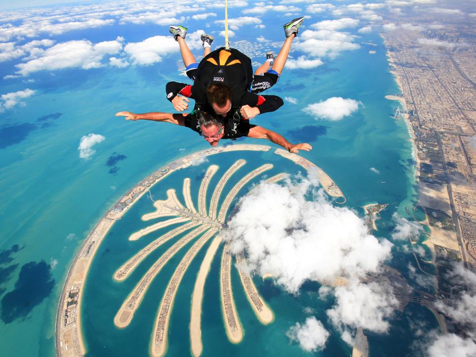
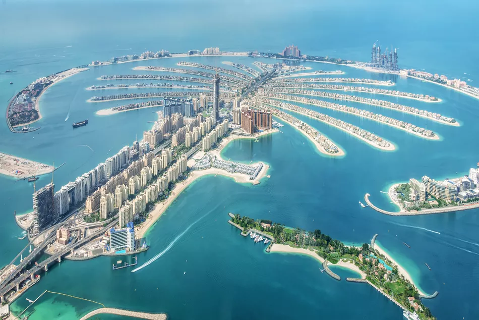

Best Places to Go Skydiving
Palm Jumeirah, Dubai
Relative newcomer amid the leading drop zones in the world, Dubai has been catching up, namely by hosting one of the biggest annual international skydive championships, a competition sponsored by The Emirates Aerosport Federation (EAF) and Skydive Dubai. Unlike the other drop zones in this list, Dubai is a city jump. Here you fly over the Palm Jumeirah, the artificial archipelago made of reclaimed land jutting out from the city’s urban marina, where you’ll get a mind-blowing view of the Persian Gulf and the whole of Dubai.


Important Note:
One of the world’s most daring developments, the Palm Jumeirah in Dubai is a haven for vacationers. Jutting out into the Arabian Gulf, this man-made archipelago was built in the shape of a palm tree, with a 3-mile-long trunk and a fan of fronds lined with luxury villas and five-star hotels. From water parks and wildlife encounters to beach clubs and boozy brunches, discover 10 cool things to do at the Palm Jumeirah in Dubai.
About Us